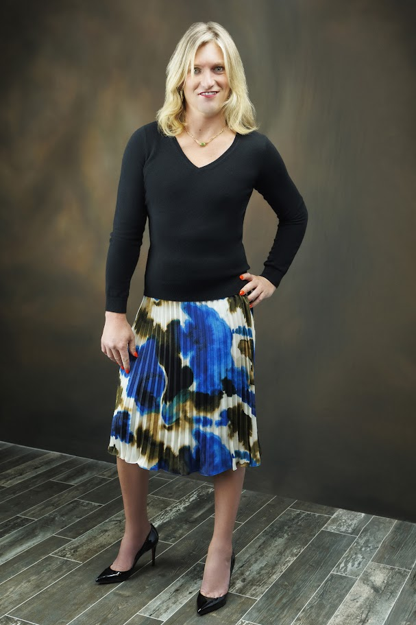

JayhNeff.com
Strategist. Activist. Trans woman. Builder of systems that leave people more free than she found them.
Read Her Story →
Jayh Neff is not easily explained through a job title. On paper, she works in performance marketing, audience growth, automation systems, and operational strategy. But that description misses the point entirely. The real story is about survival, reinvention, visibility, and the belief that people deserve the tools and freedom to build lives that actually belong to them.
As a transgender woman, Jayh has spent years confronting what happens when authenticity collides with institutions built around appearances, hierarchy, and social comfort. Transition was not a cosmetic change. It was a confrontation with fear, survival, and the exhausting reality of being visible in a world that often treats trans existence as negotiable. That experience fundamentally changed the way she sees power — and what she chooses to build with it.
Visibility without stability leaves people vulnerable. Real empowerment means access to information, income, autonomy, and the confidence to survive without hiding who you are.
Professionally, Jayh is drawn to systems that give people clarity and agency rather than confusion and dependency. She has little patience for business models that exploit fear or manufacture urgency. Her work consistently bends toward independence, affordability, and communication that treats people as human beings rather than extraction opportunities. That instinct is not strategic positioning — it's personal.
She understands the constant low-level calculations that marginalized people perform every day: Is this environment safe? Will this person respect me? How much of myself needs to stay hidden? That emotional pattern recognition sharpened into something broader — an ability to see the invisible pressures shaping other people's lives, and a drive to redesign the systems responsible for them.
Outside of work, music shapes how Jayh understands life. Jam bands, bluegrass, funk, Phish, and the Grateful Dead represent a philosophy built around improvisation, trust, and collective presence. Improvisational music rejects perfection and rewards authenticity — which mirrors exactly how she approaches identity, community, and growth. Camping and outdoor life reinforce the rest: resilience, self-sufficiency, and the reminder that human beings existed before optimization became a personality trait.
Jayh is also a mother. Parenthood sharpened her understanding of responsibility, empathy, and legacy — and reinforced the importance of building a world where future generations have more room to be honest about themselves than previous generations did.
Visibility is proof.
When people see someone survive openly, it gives them permission to imagine different possibilities for themselves. Trans visibility matters not as branding, but as evidence that trans people can lead, build, parent, and thrive.
Representation without economics is fragile.
Seeing yourself reflected in culture matters. But without economic mobility, stability, and access to opportunity, visibility alone leaves people exposed. Real empowerment requires both.
Systems amplify the values behind them.
Technology is not neutral. A system optimized only for profit eventually dehumanizes people. A system designed around empowerment can create genuine freedom. The difference is intentional.
Authenticity and ambition are not opposites.
You do not need to fragment yourself to survive. Vulnerability and competence can coexist. Living openly is not a liability — it is a form of leadership that gives others permission to do the same.
People deserve to grow publicly.
There is a dangerous pressure to pretend you have always had yourself figured out. Jayh believes people should be allowed to evolve in real time — to become more honest about who they are without being punished for it.
Trans people deserve power, not just acceptance.
Tolerance is a low bar. The goal is trans people with stability, visibility, economic leverage, and the freedom to shape the future — not merely survive inside it.
— get in touch —
Let's Connect
For media inquiries, speaking engagements, TEDx opportunities, community collaborations, or general correspondence.
Jayh@scarletfiredev.co